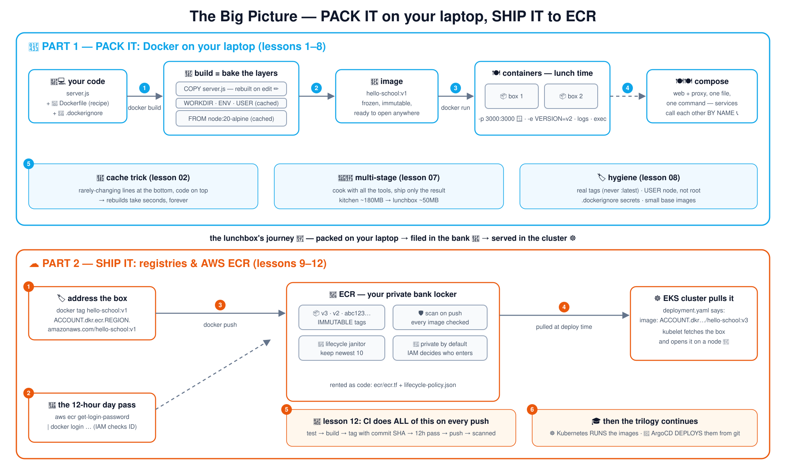

🍱 Docker & ECR शाळेच्या पद्धतीने शिका
शाळेच्या त्रयीतील कोर्स 1 पैकी 3 — Kubernetes तुमचे ॲप चालवण्याआधी आणि ArgoCD ते deploy करण्याआधी, कोणीतरी ते पॅक करून पाठवायला हवे. तोच हा कोर्स: तुमच्या लॅपटॉपवर इमेज, Dockerfiles, compose आणि multi-stage builds, मग क्लाउडमध्ये रजिस्ट्री आणि AWS ECR.
🍱 इमेज 🎂 लेयर 📝 Dockerfiles 🍽️ compose 👨🍳 multi-stage 🏦 AWS ECR
🐳 भाग 1 — पॅक करा (फक्त लॅपटॉप)
कंटेनर "माझ्या मशीनवर चालते" का संपवतात
इमेज = लेयर केक 🎂; build cache
run, ports, env, logs, volumes, networks
संपूर्ण टेबल compose करा; multi-stage; स्वच्छता
☁️ भाग 2 — पाठवा (रजिस्ट्री & ECR)
रजिस्ट्री: गोठवलेल्या डब्यांचे गोदाम 🏬
तुमचे बँक लॉकर भाड्याने घ्या: खाजगी ECR रेपो 🏦
tag → login (12 तासांचा पास) → push → EKS वरून pull
सफाईचे नियम, scans, आणि CI ते सगळे तुमच्यासाठी करते
🗺️ संपूर्ण चित्र — एक आकृती, संपूर्ण प्रवास
संपूर्ण कोर्स एका कॅनव्हासवर: पॅक करा (निळा, धडे 1–8) आणि पाठवा (नारिंगी, धडे 9–12). 4K आवृत्तीसाठी क्लिक करा — एकाच संदर्भासाठी उत्तम.

🐳 भाग 1 — पॅक करा: तुमच्या लॅपटॉपवर Docker (धडे 1–8)
फक्त Docker Desktop लागते — शून्य क्लाउड, शून्य खर्च. एक git ब्रँच = एक कल्पना; ब्रँच 07 मध्ये धडे 01–07 आहेत.
3
📝 Dockerfile पाककृतीचे कार्ड — सात ओळी 95% खऱ्या फाइल्स व्यापतात. lesson-03-dockerfileधडा वाचा → आकृती पहा ↗ 5
🧊 Volumes & networks सामायिक फ्रीज आणि इंटरकॉम — नावाने डेटा आणि कॉल. lesson-05-volumes-networksधडा वाचा → आकृती पहा ↗ 7
👨🍳 Multi-stage builds स्वयंपाकघरात शिजवा, फक्त अन्न पॅक करा — छोट्या इमेज. lesson-07-multi-stageधडा वाचा → आकृती पहा ↗ 8
🏷️ इमेजची स्वच्छता डब्यांवर लेबल लावा; घराच्या किल्ल्या कधीच पॅक करू नका. lesson-08-image-hygieneधडा वाचा → आकृती पहा ↗
☁️ भाग 2 — पाठवा: रजिस्ट्री & AWS ECR (धडे 9–12)
लॅपटॉपपासून क्लाउडपर्यंतचा पूल: clusters ना pull करता याव्यात म्हणून इमेज कुठे राहतात. खरे AWS खाते वापरते (काही पैसे; सफाई दाखवली आहे).
9
🏬 रजिस्ट्री गोठवलेल्या डब्यांचे गोदाम — एकदा push, कुठूनही pull. lesson-09-registriesधडा वाचा → आकृती पहा ↗ 10
🏦 ECR setup बँक लॉकर भाड्याने घ्या; 12 तासांचा दिवसाचा पास मिळवा. lesson-10-ecr-setupधडा वाचा → आकृती पहा ↗ 11
🧹 Push, pull & lifecycle डबे लावा; सफाई कामगार फक्त नवीन दहा ठेवतो. lesson-11-push-pull-lifecycleधडा वाचा → आकृती पहा ↗ 12
📮 CI ते क्लाउड कुरिअर प्रती लावतो — आणि k8s & ArgoCD कडे सोपवतो. lesson-12-ci-to-cloudधडा वाचा → आकृती पहा ↗
# take the course locally (just Docker Desktop for Part 1):
git clone https://github.com/BaluRaut/learn-docker-school.git
cd learn-docker-school
git checkout lesson-01-why-containers # then open lessons/01-why-containers/README.md📐 धड्यांच्या आकृत्या — क्रमांक अनुसरा
प्रत्येक धडा एका क्रमांकित बॉक्स-आणि-बाण आकृतीत, एकामागून एक — इथेच वाचता येईल (निळा = Docker, नारिंगी = ECR). स्वतंत्र पानावरही , उडी-मारण्याच्या दुव्यांसह.
1 🍱 कंटेनर का — "माझ्या मशीनवर चालते" चा शेवटॲप त्याला लागणाऱ्या सगळ्यासह पॅक करा; प्रत्येक मशीन तोच डबा उघडते.
🧑💻 तुमचा लॅपटॉप: चालते!
node 20 installed, सगळ्या libs आहेत
💥 सहकाऱ्याचा लॅपटॉप: crash
node 14, libs नाहीत, चुकीचा path
1 उघड्या-ॲपची समस्या
🍱 कंटेनर
ॲप + node 20 + libs + config
सगळे डब्याच्या आत
(host चा kernel वाटून घेतो —
VM पेक्षा खूप हलका)
2 💻 लॅपटॉप A ✅
💻 लॅपटॉप B ✅
☁️ AWS सर्व्हर ✅
3 एकसारखे, सगळीकडे
2 🎂 इमेज & लेयर — केक आणि cacheDockerfile ची प्रत्येक ओळ एक लेयर बनवते; न बदललेले लेयर cache मधून पुन्हा वापरले जातात.
🎂 इमेज = लेयर केक
FROM node:20-alpine (आधीच तयार)
WORKDIR /app
COPY server.js .
CMD ["node","server.js"]
1 🔁 पुन्हा build,
काहीच बदलले नाही
प्रत्येक लेयर cache मधून
→ ~1 सेकंदात पूर्ण
2 ✏️ server.js बदला
खालचे लेयर: cache ✅
COPY + वरचे: पुन्हा बांधले 🔨
3 💡 युक्ती
ओळींचा क्रम
क्वचित बदलणाऱ्या (खाली)
ते वारंवार बदलणाऱ्या (वर)
= कायम जलद builds
3 📝 Dockerfile — पाककृतीचे कार्ड ओळीने वाचणेसात सूचना 95% खऱ्या Dockerfiles व्यापतात — या रेपोचे ॲप त्या सगळ्या वापरते.
📝 app/Dockerfile
FROM node:20-alpine
WORKDIR /app
COPY server.js .
ENV PORT=3000
EXPOSE 3000
USER node
CMD ["node","server.js"]
1️⃣ आधीच तयार डब्यापासून सुरुवात: छोटे Linux + Node
— तुम्ही Node पुन्हा कधीच स्वतः install करत नाही
2️⃣ COPY तुमचा कोड डब्याच्या आत ठेवते
(.dockerignore ठरवते काय आत येऊ शकते)
3️⃣ ENV = default settings · EXPOSE = दस्तऐवजीकरण
("हे ॲप 3000 वर ऐकते")
4️⃣ USER: root म्हणून चालवू नका (धडा 08) · CMD: डबा
उघडल्यावर काय घडते — प्रत्येक कंटेनरमध्ये नेमकी
एक प्रोसेस, foreground मध्ये
4 🍽️ कंटेनर चालवणे — जेवणाची वेळdocker run डबा उघडते; ports म्हणजे वाढायची खिडकी; logs आणि exec म्हणजे तुमचे डोळे आणि हात.
🧊 इमेज
hello-school:v1
🏃 कंटेनर
node server.js (PID 1)
स्वतःची filesystem, स्वतःचे network
-e APP_VERSION=v2 → settings आत
1 docker run
🪟 -p 3000:3000
लॅपटॉप:3000 → डबा:3000
2 📜 docker logs
🔧 docker exec
3 🛑 docker stop → SIGTERM, स्वच्छ शेवट
4
5 🧊📞 Volumes & networks — सामायिक फ्रीज आणि इंटरकॉमकंटेनर टाकाऊ आहेत; volumes डेटा टिकवतात. Networks कंटेनरना एकमेकांना नावाने कॉल करू देतात.
📞 docker network — इंटरकॉम
📦 कंटेनर "web"
ॲप
📦 कंटेनर "proxy"
http://web:3000 ला कॉल करतो
1 IP नव्हे, नाव — Docker DNS ते सोडवते (k8s Services नमस्कार म्हणतात 👋)
🧊 volume — फ्रीज
कंटेनरच्या बाहेर राहतो,
docker rm नंतरही टिकतो 💪
2 📂 bind mount
लॅपटॉपचा फोल्डर आत जोडलेला —
कोड & config थेट बदला
3
6 🍽️🍽️ Docker Compose — एका command ने संपूर्ण टेबल लावाएक YAML फाइल प्रत्येक service वर्णन करते; docker compose up त्या सगळ्या बांधून सुरू करते, एकमेकांशी जोडून.
📄 compose.yml
web: build ./app
proxy: nginx + config
ports: 8080:80
1 🍽️ टेबल — एक सामायिक network
📦 web
ॲप · उघड नाही
फक्त नावाने पोहोचता येते
📦 proxy
nginx → http://web:3000
🪟 एकमेव दार: :8080
3 2 compose up --build
एक command वर · एक command खाली (docker compose down) · तीच फाइल प्रत्येक सहकाऱ्याच्या लॅपटॉपवर चालते
4
7 👨🍳 Multi-stage builds — स्वयंपाकघरात शिजवा, फक्त अन्न पॅक कराbuild साधने टाकाऊ stage मध्ये राहतात; फक्त निकाल पाठवला जातो. इमेज प्रचंड लहान होतात.
👨🍳 stage 1: स्वयंपाकघर
FROM node:20-alpine AS builder
node + साधने + source (~180MB)
RUN node generate.js → index.html
🗑️ build नंतर टाकून दिले
1 🍱 stage 2: डबा
FROM nginx:alpine (~50MB)
COPY --from=builder index.html
node नाही, साधने नाहीत, source नाही —
फक्त निकाल. हेच पाठवले जाते. 🚀
3 2 फक्त अन्न पलीकडे जाते
लहान इमेज = जलद push/pull (धडा 11), हल्ला करण्यासारखे कमी (धडा 08)
8 🏷️ इमेजची स्वच्छता — डब्यांवर लेबल लावा, किल्ल्या पॅक करू नकाहौशी इमेज आणि production इमेज यांना वेगळ्या करणाऱ्या चार सवयी.
🏷️ 1 · खरे tags, prod मध्ये कधीच :latest नाही
hello-school:v1 / :git-sha — ":latest" म्हणजे
तरंगते लेबल; "latest" वर rollback करता येत नाही
1 🙈 2 · खाजगी सगळे .dockerignore करा
.git, .env, node_modules, logs — जे COPY ला
दिसतच नाही ते गळू शकत नाही
2 👤 3 · USER node — root म्हणून कधीच चालवू नका
root कंटेनरमध्ये घुसखोरी म्हणजे घुसखोरी
मशीनमध्ये घुसखोरी; इमेजमध्येच अधिकार कमी करा
3 🪶 4 · छोट्या base इमेज (alpine/slim)
node:20 ≈ 1.1GB विरुद्ध node:20-alpine ≈ 180MB —
ओढायला कमी, patch करायला कमी, हल्ल्याला कमी
4
9 🏬 रजिस्ट्री — गोठवलेल्या डब्यांचे गोदामरजिस्ट्री इमेज साठवते जेणेकरून इतर मशीन त्या pull करू शकतील — लॅपटॉपपासून क्लाउडपर्यंतचा पूल.
🧑💻 तुमचा लॅपटॉप
स्थानिक बांधलेली इमेज
🏬 रजिस्ट्री — गोदाम
📚 repository: hello-school
एका ॲपच्या आवृत्त्यांचे कपाट
🏷️ tags: v1, v2, abc123…
🔢 digest = बदलता न येणारे fingerprint
1 docker push
☸️ EKS cluster
deploy च्या वेळी pull करतो
💻 सहकारी
docker pull
2 Docker Hub = सार्वजनिक गोदाम · ECR = तुमच्या कंपनीचे खाजगी गोदाम (पुढचा धडा)
3
10 🏦 ECR setup — बँक लॉकर भाड्याने घेणेखाजगी repository एकदा बनवा; प्रत्येक भेटीला नवा 12 तासांचा पास घ्या.
🏗️ लॉकर भाड्याने घ्या (एकदा)
terraform apply (ecr/ecr.tf)
किंवा: aws ecr create-repository
1 ☁️ AWS — ECR
🔐 repository: hello-school (खाजगी)
पत्ता: ACCOUNT.dkr.ecr.REGION.amazonaws.com/hello-school
🎫 12 तासांचा दिवसाचा पास
aws ecr get-login-password
| docker login …
2 3 आता docker push/pull आत जाऊ शकतात
🔑 आत कोण येऊ शकते हे = IAM (तुमच्या AWS user/role ला
ecr:* परवानग्या लागतात — बँक आधी ओळखपत्र तपासते)
11 🧹 Push, pull & lifecycle — डबे लावणे आणि सफाई कामगारtag हाच पत्ता; push डबा लावतो, EKS तो घेतो, सफाई कामगार लॉकर नीट ठेवतो.
🏷️ डब्याला पत्ता द्या
docker tag hello-school:v1 \
ACCOUNT.dkr…/hello-school:v1
1 🏦 ECR लॉकर
📦 v3 (सर्वात नवा)
📦 v2
📦 v-old… कालबाह्य 🧹
2 docker push
☸️ EKS deployment
image: ACCOUNT.dkr…/
hello-school:v3 → pull केला
3 🧹 lifecycle policy
"नवे 10 ठेवा, बाकी कालबाह्य"
(ecr/lifecycle-policy.json)
4
12 📮 CI ते क्लाउड — कुरिअर प्रती लावतोखऱ्या जगात एक रोबोट प्रत्येक push वर धडे 1–11 करतो — आणि पुढच्या दोन कोर्सकडे काठी सोपवतो.
🧑💻 डेव्हलपर
git push
📮 CI — कुरिअर रोबोट
✅ test → 🍱 build →
🏷️ tag = commit SHA →
🔑 12 तासांचा पास → push
(k8s कोर्सचे CircleCI नेमके हेच करते)
1 🏦 ECR
🛡️ push वर scan — प्रत्येक इमेज
ज्ञात vulnerabilities साठी तपासली
2 ☸️ पुढचा कोर्स: Kubernetes या इमेज
cluster वर चालवते
🤖 मग: ArgoCD त्या git मधून deploy करते,
आपोआप, कायमचे
3 4
धडा 01 सुरू करा →
📐 सर्व 12 धड्यांच्या आकृत्या
🧪 प्रश्नमंजुषा
🗓️ अभ्यास योजना
⏮️ आधी काय होते & फायदे-तोटे
☸️ पुढचा कोर्स: Kubernetes
{kind=link}